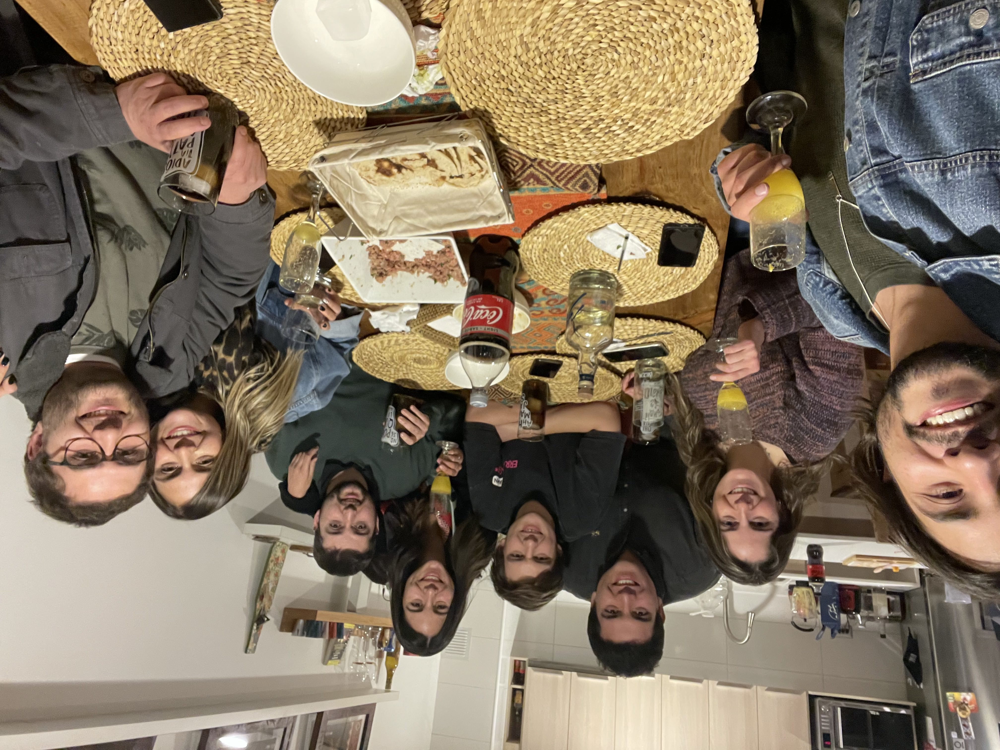

Foodie Santiago surge de un grupo de amigos que siempre se ha apasionado por la comida. La comida representa muchas cosas dependiendo de la cultura, pero algo que tienen en comúm en todos lados es que es un elemeto que hace que la gente que conecte, no importa que sean amigos, parejas, familia o simplemente conocidos. La comida tiene la capacidad de romper barreras y darnos algo de que hablar y conectar
